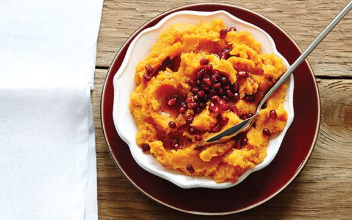

Sweet Potato Puree

Sweet Potato Puree
A rich sweet potato puree with roasted garlic and pomegranate molasses.
Ingredients
- 2 large sweet potatoes.
- 10 cloves of garlic - unpeeled.
- 75g of unsalted butter.
- 1 tsp olive oil.
- 3 tbsp pomegranate molasses.
- 1 - 2 tbsp pomegranate seeds - optional.
Method
- Preheat overn to 170 degrees centigrade.
- Place sweet potatoes on a baking tray and roast for 45 minutes
- Toss garlic cloves in olvice oil, and wrap in a tinfoil pouch.
Place pouch on the baking tray with the sweet potatoes and continue to roast for a
further 25 minutes.
- Remove baking tray from the oven. Sweet potatoes should be very
tender, and beginning to caramalise.
- Peel sweet potatoes and transfer flesh to a saucepan over a medium heat.
- Squeeze roasted garlic cloves into the saucepan and add unsalted butter.
- Stir gently with a wooden spoon until consistency is smooth.
- Stir through pomegranate molasses.
- Transfer to serving dish.
- Optional: garnish with pomegranate seeds.